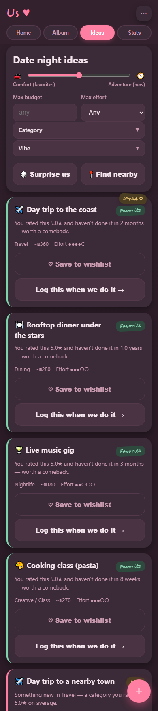
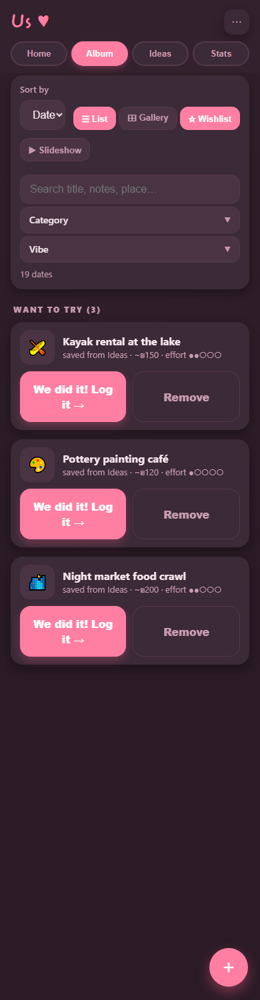
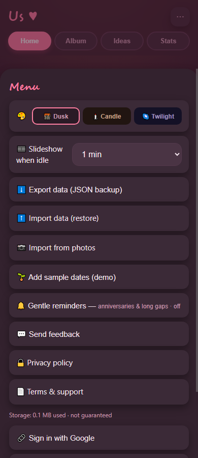
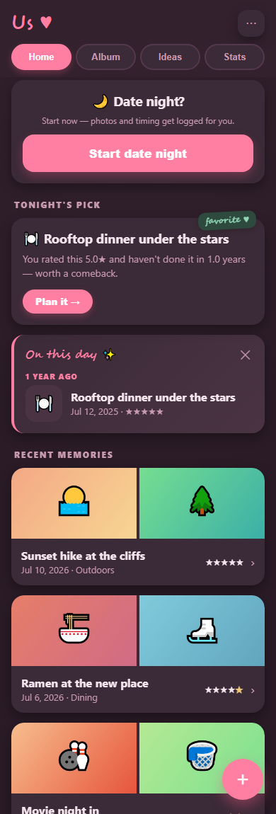
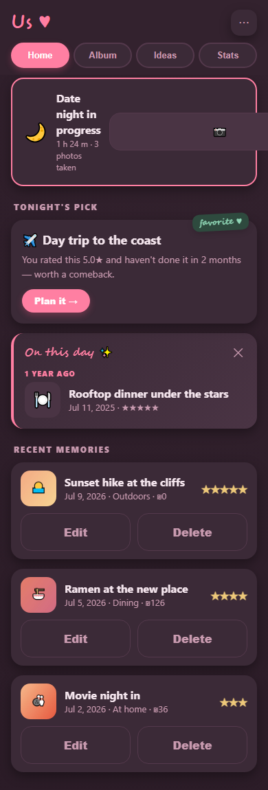
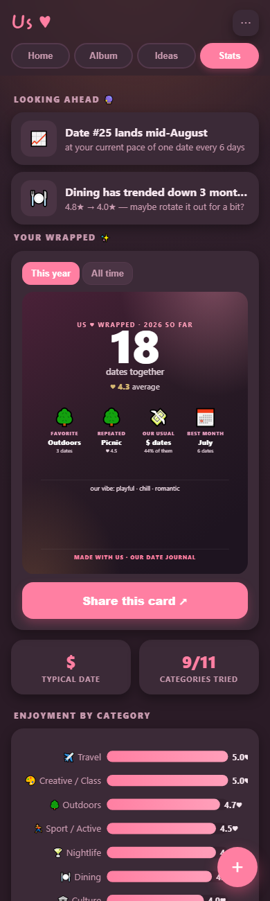
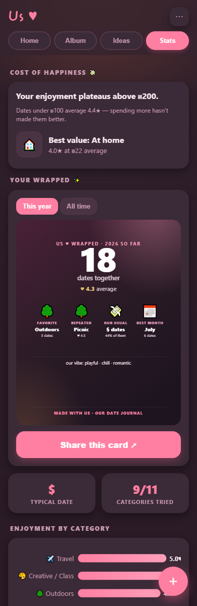
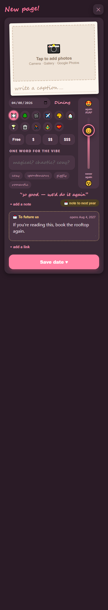
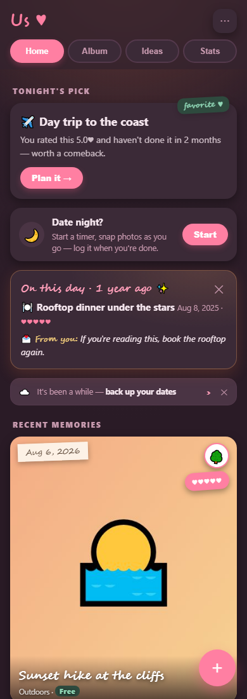

Visual mockups for every unimplemented ROADMAP.md point.
"Before" is the real app today; "After" is a mock rendered inside the real app with its real CSS
(injected by js/dev-shots.js, captured by node design/capture.mjs) — so
spacing, theme and components are authentic, only the feature content is fake.
Shipped items (#1 milestone strip — later removed by choice — and #6 photo import) are not shown,
and neither is #12 (iOS support) — platform work with no UI to mock, see IOS_PLAN.md.
Roadmap #2 · Stats tab
Shareable "Wrapped" recap card Medium
A generated, shareable image: favorite category, most-repeated date, best month, totals — for "all time" and "this year". Rasterized SVG → PNG, shared via the Web Share API (download fallback). No photos by default.
Touches: js/charts.js (new SVG card) · js/ui.js renderInsights() (entry button) · Web Share API
Wrapped card at the top of Stats with a Share button
Why it wins: nobody else has a real logged history to build this from, and shared cards are an organic growth loop.
Roadmap #3 · Ideas + Album tabs
Wishlist — close the Suggest → Log loop Medium
Save a suggestion as "want to try"; saved ideas live in a wishlist and pre-fill the log form when the date actually happens. Schema: status: "idea" | "done" plus optional url on entries; analytics must exclude non-done entries (the real work).
Priority: Important × Not urgent — closes a dead-end in Suggest and matches user feedback (issue #4: "save an idea for a future date, maybe with url link"), but ships after #1/#2. The URL field is the one new detail from that issue — a link to a restaurant/Pinterest page, shown on the wishlist card.
Before
Ideas today — a card can only be logged, not kept
After

"♡ Save to wishlist" on every card; saved sticker on kept ones
Before
Album today — only past (done) dates
After

New "☆ Wishlist" view in Album; "We did it! Log it →" pre-fills the form
Why it wins: the app becomes prospective, not only retrospective — a reason to open it between dates.
Roadmap #4 · ⋯ menu (+ system notifications)
Gentle reminders (opt-in) Medium
Two nudges: anniversary-of-a-great-date ("A year ago you loved Rooftop dinner — do it again?") and inactivity ("3 weeks since your last date"). The push Worker + permission UX already exist from partner notifications, so this is mostly two content triggers.
Touches: js/ui.js menu · js/push.js/sw.js · js/analytics.js onThisDay() (already exists)
Before
Menu today — notifications exist only for partner sync events
After

New "🔔 Gentle reminders" row with its own opt-in state
Note: the notification itself renders as a system notification (not screenshotable here); the in-app change is just this settings row.
Roadmap #5 · Ideas tab
Double-blind date match LargeParked — needs sync adoption
Both partners privately vote 👍/👎 on suggestions over sync; only mutual yeses are revealed. Needs security-sensitive Firestore rules so neither can see the other's vote pre-match.
Vote buttons per card; a matched card lights up for both
Roadmap #7 · Home tab (banner spans all tabs)
Date Night mode — log as a byproduct Medium
"Start date night" timestamps the start; a persistent banner offers a camera button that collects photos into a pending pool; "End" opens the log sheet pre-filled with date, duration and photos. State survives app closes; auto-expires after ~12h.
Touches: js/ui.js (start card + banner) · activeDate setting via js/store.js — no schema change
Before
Home today — the app exists only before and after a date
After

Idle: a "Start date night" card on Home
After (active)

Active: elapsed time, photo count, 📷 and End — shown on every tab
Roadmap #8 · Stats tab
Relationship forecasting Small→Medium
Forward-looking cards: pace projection ("date #25 lands mid-August"), per-category enjoyment slopes, gap warnings. Pure math over existing aggregates; every card suppressed below a minimum sample size.
Touches: js/analytics.js (new pure functions) · js/ui.js renderInsights()
Before
Stats today — every insight looks backward
After

"Looking ahead 🔮" cards above the existing stats
Guardrail: phrased as observation, never prophecy; hidden under ~10 dates.
Connect money to joy: enjoyment by cost band ("plateaus above ₪200"), best-value category. The Ideas-tab budget cap from this item already shipped; what remains is the Insights side.
Stats today — value-for-money list exists, but no cost-band claims
After

"Cost of happiness 💸" card with plateau + best-value claims
Roadmap #10 · Log sheet
AI post-date interviewer Medium
Optional conversational logging: answer ~3 free-text questions; an LLM (via a Cloudflare Worker, keys server-side) maps answers into the schema and keeps the best line as a quote. The user always reviews the filled form before saving — the AI never writes to the DB.
Chat option above the form; answers fill the form for review
Caveat: first log path that touches a server — clearly optional, with a consent note.
Roadmap #11 · Log sheet + Home tab
Time-capsule notes Tiny
An optional "note to your future selves" written while logging; it resurfaces exactly one year later in the existing On-this-day memory card. Smallest item on the roadmap.
Touches: js/model.js (optional capsule) · js/ui.js log form + memory card · onThisDay() already finds the entries
Before
Log sheet today — notes end at "Notes / memories"
After

Collapsed-by-default capsule field after the notes
Before
Memory card today — facts only
After

One year later: your own words inside the memory card